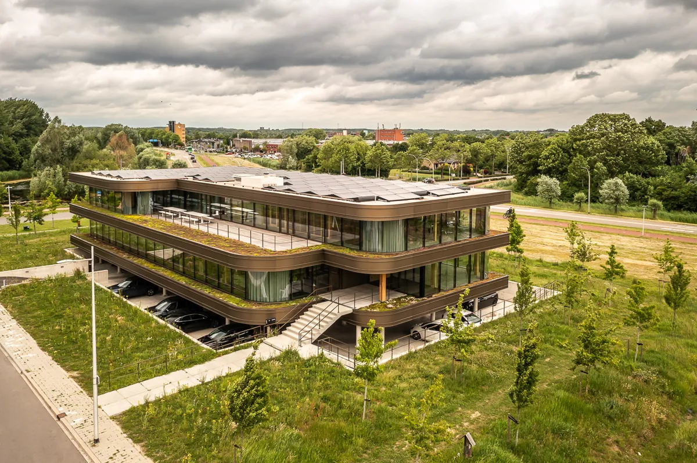
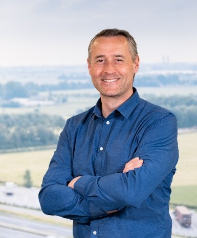

0
Jaar ervaring

Constructief adviesbureau van Bas van Ooijen
SDE helpt architecten, ontwikkelaars, aannemers en gemeenten met doordachte constructieve oplossingen die veilig, maakbaar en economisch verantwoord zijn.
Pragmatische advisering, sterke ontwerpgevoeligheid en decennialange ervaring in zowel ontwerp- als uitvoeringsfase zorgen voor rust in projecten waar veel op het spel staat.
0
Jaar ervaring
0
Projecten in ontwerp en uitvoering
Complex
Beton-, staal- en hybride constructies
0
FTE aangestuurd in leidinggevende rollen
Over SDE
Bas van Ooijen is een constructief ontwerper en ingenieur met ruime ervaring in zowel de ontwerp- als uitvoeringsfase van bouwprojecten. Zijn aanpak is pragmatisch, zorgvuldig en gericht op constructieve veiligheid, maakbaarheid, efficiëntie en kostenbeheersing.

Goede constructieve engineering is meer dan rekenen. Het gaat om het vroeg signaleren van risico’s, het versterken van ontwerpkeuzes en het creëren van oplossingen die in de praktijk werkelijk werken.
SDE werkt helder, direct en zorgvuldig. Van concept tot uitvoering worden keuzes onderbouwd met een scherp oog voor haalbaarheid, planning, kosten en samenhang tussen disciplines.
Bas is gewend om te schakelen met architecten, aannemers, ontwikkelaars, gemeenten en technische adviseurs. Dat maakt besluitvorming sneller en voorkomt verrassingen later in het traject.
De beste constructie ondersteunt het ontwerp, beperkt uitvoeringsrisico’s en blijft economisch rationeel. SDE zoekt naar die balans in ieder project.
Diensten
SDE ondersteunt projecten in verschillende fasen, van eerste haalbaarheidsstudie tot technische uitwerking en begeleiding tijdens realisatie.
Waarom SDE
Voor opdrachtgevers die tempo willen houden zonder concessies te doen aan kwaliteit, veiligheid of maakbaarheid.
Projecten
Van waterzuiveringen en hoogbouwmagazijnen tot woongebouwen, onderwijs en stationsgebieden: projecten waarin constructieve keuzes direct invloed hebben op kwaliteit, risico en voortgang.
Ervaring
De kracht van SDE komt niet alleen uit technische kennis, maar ook uit jarenlange verantwoordelijkheid binnen toonaangevende ingenieursorganisaties en multidisciplinaire projectomgevingen.
Binnen WSP was Bas actief als senior adviseur constructies en afdelingshoofd. Daar stuurde hij teams aan, bewaakte hij kwaliteit, bepaalde hij mede de koers van de business unit en leidde hij complexe projecten van ontwerp tot realisatie.
Bij Grontmij groeide hij door van projectleider en senior adviseur naar hoofd constructieadvies en manager bouw regio Randstad. Die combinatie van inhoud en leiderschap vormt nog steeds de kern van de SDE-aanpak.
De jaren bij Strackee en Ingenieursbureau Bartels legden de technische fundering: ontwerpen, detailleren, rekenen en het leren doorgronden van constructies tot in de essentie.
Expertise
Specialistische inhoud is belangrijk, maar het echte verschil zit in het vermogen om complexe informatie terug te brengen tot heldere keuzes.
Vertrouwen
Hieronder staan nette placeholder testimonials die later eenvoudig vervangen kunnen worden door echte referenties van architecten, ontwikkelaars of aannemers.
Veelgestelde vragen
Klaar om te schakelen?
SDE ondersteunt projecten met onafhankelijk advies, constructieve zekerheid en oog voor uitvoering.
Contact
SDE is beschikbaar voor ontwerpteams, uitvoerende partijen en opdrachtgevers die behoefte hebben aan degelijk constructief advies en snelle inhoudelijke afstemming.